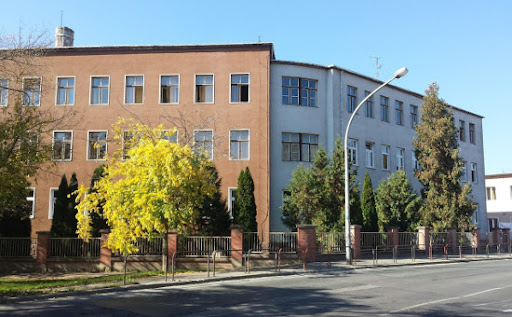

| Kezdőlap | Tanulmányok | Jövőm |
 |
Pálházai Márknak hívnak, 19 éves, Szombathelyi lakosa és a VVSZC Gépipari és Informatikai Technikum végzős diákja vagyok. Tanulmányaimat 2022-ben kezdtem el izgatottan, éhezve új ismeretek megszerzésére. Részletesebben majd a tanulmányaim menüpontban beszélek, látható a megszerzett tudások, tapasztalatok. |
|
Lehetőségem volt bekerülni duális tanulóként a TDK Hungary Components Kft. karjai alá újabb tudás, ismeretek és tapasztalatok megszerzése érdekében. Erről is bővebben beszélek a tanulmányaim ismertetése közben. |